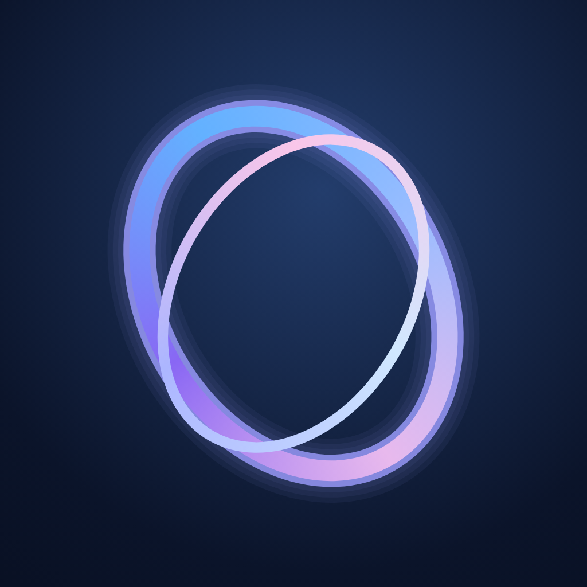
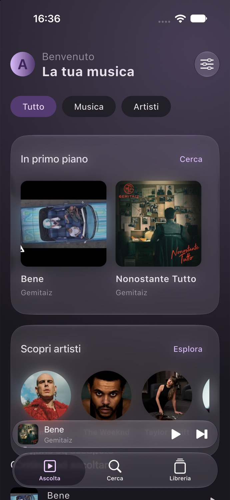
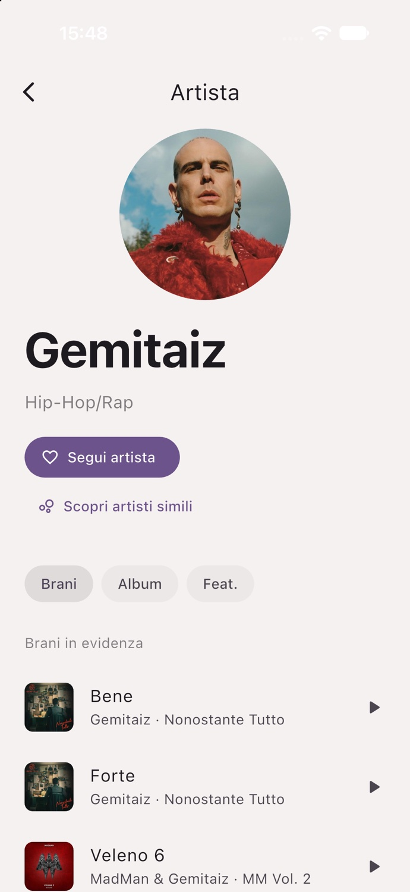
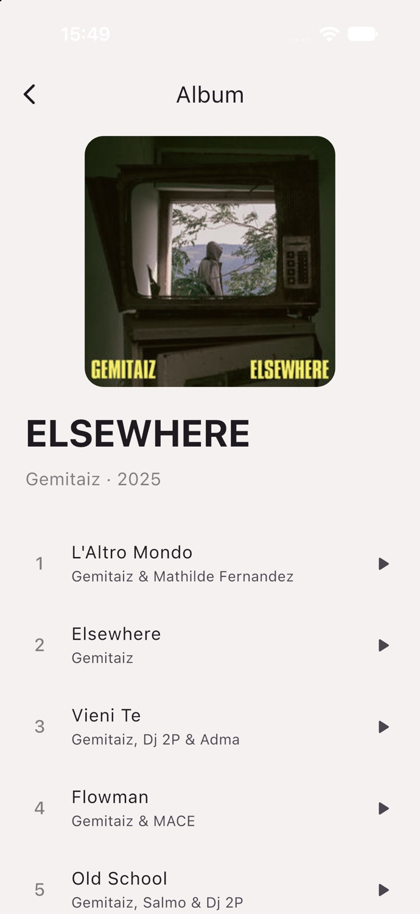

Le connessioni
fanno la differenza.
Tocca un artista e scopri chi gli sta vicino. Un’esplorazione dopo l’altra, senza aggiungere nulla ai preferiti al posto tuo.

AURAProva AURAYOUR MUSIC. YOUR UNIVERSE.
Un mondo da ascoltare.
Uno spazio da rendere tuo.

L’app reale, catturata sul simulatore iPhone. Cornici illustrative.
SEGUI LA MUSICA.
Cerca un nome, attraversa la sua discografia, scopri le collaborazioni.
E quando trovi il tuo prossimo artista preferito, seguilo.
Tocca un artista e scopri chi gli sta vicino. Un’esplorazione dopo l’altra, senza aggiungere nulla ai preferiti al posto tuo.
Avvia un brano, cambia schermata e continua ad ascoltare. Player, coda e controlli di sistema accompagnano la tua sessione.
Brani del cuore, artisti seguiti e playlist. L’ascolto resta nella cronologia; i preferiti li decidi tu.
IL TUO STILE. DAVVERO.
Chiara quando vuoi luce. Scura quando vuoi immergerti.
Scegli un accento e guarda l’app cambiare.
Viola · Scuro
16 catture reali: nessun filtro applicato alle schermate.
Nell’app puoi anche creare il tuo colore personalizzato.
PICCOLI DETTAGLI. PIÙ MUSICA.

Brani, album e collaborazioni nella scheda artista. Il catalogo si esplora anche prima del primo ascolto.

Scalette in ordine e diverse edizioni raggruppate. Per ascoltare un disco come un disco.
Testi e karaoke quando disponibili. Catalogo, foto e registrazioni dipendono dai provider. Materiali nativi iOS dove supportati; su Android l’aspetto può differire.
COSTRUITA, UN PASSO ALLA VOLTA.
Dalla prima libreria unificata alle discografie.
Dal problema del 403 ai colori personali.
Ogni passaggio lascia una traccia.
Un player. Una libreria.
Artisti, album, discografie.
Immagini, coda, preferiti.
I tuoi colori. Nuove scoperte.
PUBLIC PREVIEW · 0.6.1
Android 7+: APK di prova con firma di sviluppo.
iOS 15+: IPA senza firma, richiede provisioning prima dell’installazione. TestFlight non disponibile.